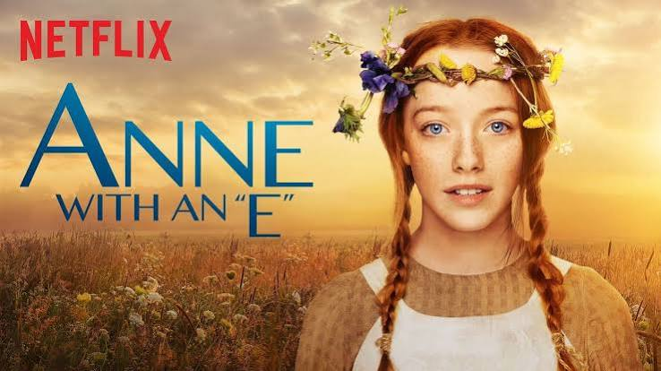
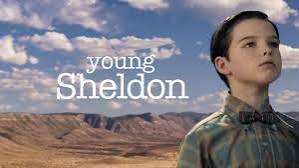
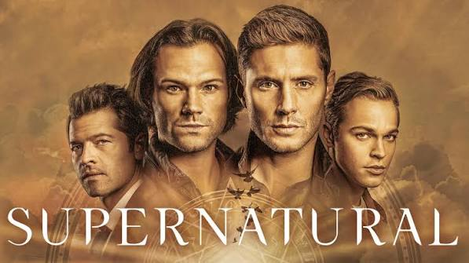

Página de séries
Breaking bad

Sinopse A história de Breaking Bad acompanha Walter White, um professor de química de 50 anos que se transforma em um implacável barão do crime após receber um diagnóstico de câncer terminal.
Stranger things

Sinopse A história principal começa em 1983, quando o garoto Will Byers desaparece misteriosamente após uma noite jogando RPG com seus amigos. Enquanto a mãe de Will, Joyce, e o xerife Jim Hopper iniciam as buscas, os amigos de Will — Mike, Dustin e Lucas — encontram uma menina fugouve de um laboratório secreto local. Conhecida como Eleven (Onze), ela possui poderes telecinéticos e psicocinéticos.
Anne with an e

Sinopse Anne with an E conta a história de Anne Shirley, uma garotinha órfã de imaginação vibrante que é adotada por engano por dois irmãos solteirões.
young sheldon

Sinopse Young Sheldon é uma série de comédia dramática que narra a infância e a adolescência do brilhante e excêntrico Sheldon Cooper, dos nove anos até a idade adulta, mostrando seus desafios no ensino médio no Texas.
Supernatural

Sinopse Supernatural acompanha a jornada dos irmãos Sam e Dean Winchester, que viajam pelos Estados Unidos em um Chevrolet Impala 1967 caçando monstros, fantasmas e demônios.